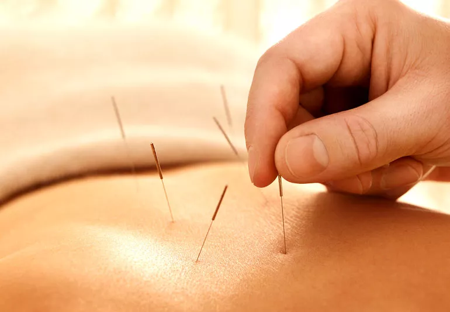
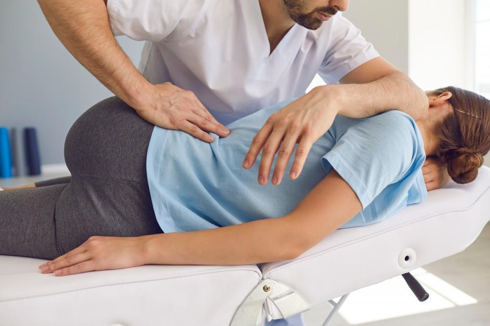
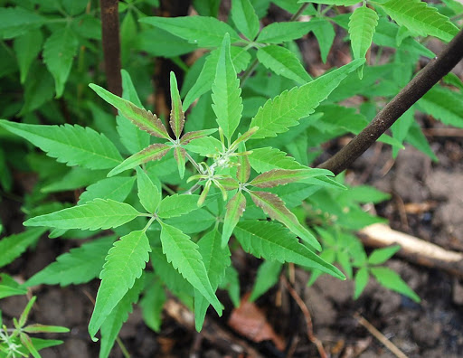
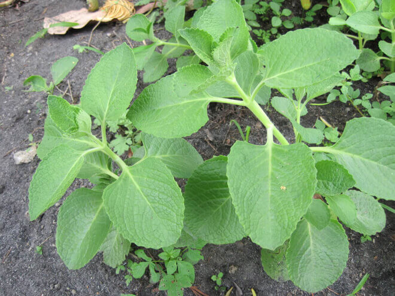

Alternative Medicine is any form of medicine or healing that does not fall into conventional medical practice (Medical News Today). Alternative Medicine, much like how its name suggests, acts as an alternative to modern medicine. Commonly, alternative medicine is a natural practice using natural forms of medicine such as herbs, turmeric, massage therapy, and others. However, alternative medicine lacks medical and biological plausibility, which means that it isn’t always effective. Many of its practices aren’t professionally tested. Although, there are still several experts and professionals (who may or may not be in the field of alternative medicine) that can assure efficiency, efficacy, and effectiveness.
Lesson 2: What are some TYPES of Alternative Medicine?
Alternative Medicine encompasses a lot of forms, practices, and types. However, let’s narrow it down to six (6) most common types:
Acupuncture involves inserting needles into the body to stimulate sensory nerves in the skin and muscles (Medical News Today).
It originally stems as a component from Traditional Chinese Medicine.
According to Mayo Clinic, acupuncture relieves discomfort brought upon by some of these illnesses:
Chemotherapy
Dental Pain
Fibromyalgia
Headaches
Body Pains
Osteoarthritis
Menstrual Cramps, and
Some respiratory illnesses (e.g. allergic rhinitis)
Here is an image of how acupuncture looks like:

Here is a video about Acupuncture (From "What You Need To Know About Acupuncture" by RafflesHospital on Youtube.com)
#Acupuncture
#End_of_Lesson
Aromatherapy is the practice of using essential oils for therapeutic benefit. (Johns Hopkins Medicine)
This has been used for centuries to relieve pain and emotional stress.
Additionally, according to Johns Hopkins Medicine, aromatherapy, when inhaled, the scent molecules in essential oils travel from the olfactory nerves directly to the brain and especially impact the amygdala, the emotional center of the brain.
Here is a video on Aromatherapy (From "How Aromatherapy Works" by Tazeka Aromatherapy on Youtube.com)
Interactive: Click to reveal three (3) popular scents used in Aromatherapy!
#Aromatherapy
#End_of_Lesson
Chiropractic is a licensed health care profession that emphasizes the body's ability to heal itself. Treatment typically involves manual therapy, often including spinal manipulation. (National Center for Complementary and Integrative Health.gov)
Chiropractic care can provide relief to body pains such as:
Lower back pain
Neck pain
Muscle pain, and
Headaches
Moreover, scoliosis patients also take chiropractic treatment.
Here is an image of how chiropractic care looks like:

#Chiropractic_Care
#End_of_Lesson
Herbal medicine is plant-based products used to treat diseases or to maintain health, are called herbal products, botanical products, or phytomedicines. (Johns Hopkins Medicine)
In the field of alternative medicine, herbal medicine is one of the most popular types (as when most people think of "alternative medicine", herbs usually come into the mind first).
The following are some examples of herbs in the Philippines that can be used as herbal medicine:
Asthma weed (tawa-tawa)
Five-leaved Chaste Tree (lagundi)
Philippine Oregano
Here are some images of the herbs aforementioned (Click each photo to reveal their names!):


#Herbal_Medicine
#End_of_Lesson
Massage therapy is used to help manage a health condition or enhance wellness. It involves manipulating the soft tissues of the body. (National Center for Complementary and Integrative Health.gov)
Massage therapy also usually relieves body pains and cramps, and provides emotional relief and relaxation.
Here is an informative video on massage therapy (From "Benefits of Massage Therapy | Chambers Center for Well-Being" by Atlantic Health System on Youtube.com)
#Massage_Therapy
#End_of_Lesson
Traditional Chinese medicine (TCM) is thousands of years old and has changed little over the centuries. Its basic concept is that a vital force of life, called Qi, surges through the body. Any imbalance to Qi can cause disease and illness. This imbalance is most commonly thought to be caused by an alteration in the opposite and complementary forces that make up the Qi. These are called yin and yang. (Johns Hopkins Medicine)
(Basically, Traditional Chinese Medicine (TCM) stems from old Ancient Chinese methods of treating illnesses, connecting them with spiritual beliefs. -A note from Pengu-nim ^^)
Here are some examples of Traditional Chinese Medicine and Practices:
Acupuncture
Moxibustion
Chinese Herbal Medicine
Tai chi
Quigong
Tui na massage
For a more detailed explanation, refer to this video (from "Traditional Chinese Medicine For Beginners" by Dr. Alex Heyne - Acupuncture and Chinese Medicine on Youtube.com)
#Traditional_Chinese_Medicine
#End_of_Lesson
Lesson 3: What's the IMPORTANCE and IMPACT of Alternative Medicine?
Alternative Medicine, just like modern medicine, is important and has a lasting impact on society, civilizations, and the world. Firstly, alternative medicine has a connection to nature, spirituality, and culture. Much like in China, alternative medicine is incorporated into their history and culture, and remains alive through the beliefs and practices of their citizens. Next, alternative medicine, due to it stemming from natural resources, is easy-on-the-wallet and readily available. Most modern medicines usually cost a lot of money, especially in hospital instances. Lastly, it has a lasting significance and impact to people as it not only treats the body pains and aches, but also treats emotional stress and gives relief and relaxation to patients.